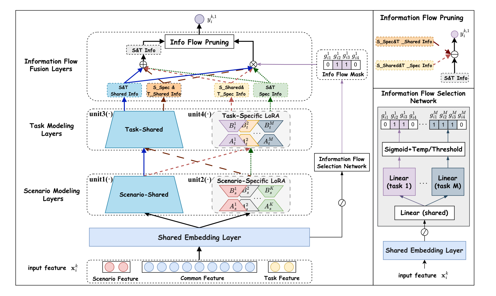

Automated Information Flow Selection for Multi-scenario Multi-task Recommendation (多场景多任务推荐中的自动化信息流选择)
- 会议/期刊: WSDM 2026
- 作者与机构: Chaohua Yang, Dugang Liu, Zhong Ming (深圳大学)；Shiwei Li (华中科技大学)；Xing Tang, Xiuqiang He (深圳技术大学)；Weihong Luo (腾讯金融科技 FIT)；Xiangyu Zhao (香港城市大学)
- 推荐链路定位: 精排（多场景多任务统一排序）
- 研究方向: 跨域与多场景推荐 / 多任务学习与列表级重排
- 论文原文: https://arxiv.org/abs/2512.13396v1
- 开源代码: https://github.com/ChaohuaYang/AutoIFS
TL;DR (1分钟核心速览)
多场景多任务推荐（MSMTR）现有模型依赖 MoE/MLP 堆叠四类信息单元（场景共享/独有 × 任务共享/独有），既参数膨胀又把四类"场景→任务"信息流不加区分地全量融合，引入噪声甚至负迁移。本文提出 AutoIFS：用 LoRA 低秩适配器解耦四类信息单元（共享用全秩 \(W\)、独有用低秩 \(BA\)，加法即天然融合），再用超网络式信息流选择网络为每个实例、每个任务生成 4 维软掩码，经温度退火离散化后以减法剪枝剔除无效信息流。在 MovieLens-1M / KuaiRand-Pure 上按 8:1:1 比例划分、AUC 全场景全任务最优（整体 AUC 0.8253 / 0.7471），参数量仅略高于 MLoRA、远低于 HiNet，腾讯 FiT 线上两周 A/B 平均 CVR +2.46%、订阅金额 +8.32%。
Background & Motivation (背景与核心矛盾)
- 主流范式: MSMTR 采用分层范式——嵌入层 → 场景建模层（场景共享 \(f_s^{sh}\) + 场景独有 \(f_s^k\)）→ 任务建模层（任务共享 \(f_t^{sh}\) + 任务独有 \(f_t^m\)），四单元交叉产生四类有向信息流 \(h^{sh,sh}, h^{sh,m}, h^{k,sh}, h^{k,m}\)，最终融合为 \(Q_i^{k,m}\)。代表作为 HiNet（层次蒸馏）、M3oE（三路 MoE）、M2M/3MN（元网络动态权重）。
- 前人局限: ① 依赖 MoE/MLP 显式建模四类关系，参数量随场景数×任务数线性膨胀，融合逻辑复杂、训练困难（M2M 单 epoch 训练 30.3s，HiNet 18.5s）；② 按 Eq.(3) 将四类信息流无差别全量相加，无法区分其贡献差异——在主场景子任务中 \(h^{k,m}\) 才是关键，其余信息流可能纯属噪声，造成负迁移。
- 核心洞察 (Key Insight): 四类信息流是复杂场景-任务依赖的可分解局部成分，其重要性随实例（场景属性）与任务而变；因此"选哪些流"应是一个实例级、任务级可学习的决策，而非固定架构。
- 本文切入点: 用 LoRA 让四类单元天然解耦且加法即融合（保持轻量），再用一个可微掩码网络自动剪掉无用信息流。
Method (核心方法设计)
1. 整体框架 (Overall Architecture)
输入实例 \(x_i^k\) 经共享嵌入层得 \(e_i^k\)；四类信息单元由 LoRA 实现——场景/任务共享单元为全秩线性层 \(W^{sh}x+b^{sh}\)，场景/任务独有单元为低秩 \(B^kA^kx+b^k\)（\(A\) 高斯初始化、\(B\) 零初始化），四类信息流 \(h_i^{\cdot,\cdot}\) 由单元组合直接算出并以"+"融合（此时恰为原 Eq.(2) 的分解形式）。并行地，选择网络以共享 FNN 提取实例表征、再经任务专属超网络头输出 4 维权重，温度退火 sigmoid 得软门控、训练末离散化为 0/1 掩码，最后用减法从融合表征中剔除被掩码的信息流，直接接输出层（不设预测塔）。训练分两阶段：联合训练（含 \(l_1\) 稀疏正则）→ 固定掩码重训（reuse）。
flowchart TD
A["输入特征 x_i^k"] --> B["共享嵌入层 e_i^k"]
B --> C["LoRA 四信息单元<br/>W_sh / B^kA^k / W_sh_t / B^mA^m"]
B --> D["信息流选择网络<br/>共享FNN + 任务超网络头"]
C --> E["四类信息流 h 加法融合 Q"]
D --> F["温度退火Sigmoid → 离散掩码 g"]
F --> G["减法剪枝 Q - g⊙h"]
E --> G
G --> H["输出层 → 多任务并行预测"]
2. 关键设计拆解 (Key Designs)
-
LoRA 解耦四信息单元（轻量化的关键）：痛点是用 MoE/MLP 建模四单元参数爆炸且融合算子复杂。本文令共享信息走全秩 \(W\)、独有信息走低秩 \(BA\)，则四类流可独立计算后直接相加即完成融合，且仅在独有单元上付出 \(r(d_{in}+d_{out})\) 的极小参数代价： $\(h_i^{sh,sh}=f_t^{sh}(f_s^{sh}(e_i^k)),\quad h_i^{k,m}=f_t^{m}(f_s^{k}(e_i^k)),\quad Q_i^{k,m}=\sum h_i^{\cdot,\cdot}\)$ 直觉：低秩瓶颈天然抑制独有信息的过拟合（MovieLens 上最优 \(r=2\) 即印证），加法融合则保证可解释的流级分解。
-
任务感知信息流选择网络 + 减法剪枝：痛点是四类流重要性因实例/任务而异，简单 FNN 无法刻画场景差异。本文先共享 FNN 提表征 \(h_i^L\)，再由任务专属头 \(w_i^m=W^mh_i^L+b^m\) 生成权重，经温度退火 \(\tau=\gamma^{p/P}\) 的 sigmoid 得连续门控 \(g_i^m=\phi(w_i^m\times\tau)\)，训练 \(P\) 轮后按 \(w_i^m\le 0\) 硬离散化。剪枝采用减法而非乘法置零： $\(\delta(Q_i^{k,m},\hat I_i^{k,m})=Q_i^{k,m}-\sum_{j=1}^{4}g_{ij}^m\odot h_i^{j}\)$ 直觉：减法保留未被选中流的原始幅值，避免乘法掩码对保留流的缩放失真；实验还发现额外预测塔反而削弱场景-任务关系刻画，故直接去掉。
-
训练目标、正则与两阶段优化：总损失 \(\mathcal{L}_{AutoIFS}=\mathcal{L}_{CE}+\lambda\|\mathbf{g}\|_1\)，\(l_1\) 近似 \(l_0\) 促稀疏并防止过度剪枝；免负采样（CTR 式二分类交叉熵，非对比学习）。Reuse 阶段固定最优掩码 \(\{G_i\}\) 仅以 \(\mathcal{L}_{CE}\) 重训 \(\Theta\) 共 \(P_c\) 轮，消除"选择网络与主干联合优化"的相互干扰。推理时选择网络仅为一个轻量 MLP，额外开销可忽略（线上延迟 2.74ms → 2.98ms）。
Experimental Setup & Evaluation Protocol (实验设置与评估协议)
- 数据集与预处理: MovieLens-1M 按
age切 3 场景、以 rating≥4 / ≥5 构造 click / like 两任务，不做低频过滤；KuaiRand-Pure 按tab切 3 场景、click / long-view 两任务，低频特征阈值 2。
| 数据集 | 场景 | #Users | #Items | #Instances | 占比 | 说明 |
|---|---|---|---|---|---|---|
| MovieLens-1M | S1/S2/S3 | 1,325 / 2,096 / 2,619 | 3,429 / 3,508 / 3,595 | 210,747 / 395,556 / 393,906 | 21.1% / 39.6% / 39.4% | 电影评分，age 分场景 |
| KuaiRand-Pure | S1/S2/S3 | 15,398 / 27,049 / 11,809 | 6,233 / 7,580 / 4,633 | 178,087 / 2,236,414 / 93,165 | 7.1% / 89.2% / 3.7% | 短视频，tab 分场景，S2 极度主导 |
- 数据划分与防穿越 (Splitting Strategy): 每场景内比例划分 8:1:1（train/valid/test），非 Leave-One-Out、非全局时间戳切分。
- 排名评测协议 (Ranking Protocol): 本质为 CTR 式二分类打分评估，报告 AUC↑ 与 LogLoss↓（非 Full-Ranking 排序指标）；AUC 提升 >0.1% 视为显著，双样本 t 检验 \(p\le0.05\)。
- 对比基线与超参设置: 基线含多任务（DNN-T/MMoE-T/MLoRA-T）、多场景（-S）、MSMTR（-ST 改造版、M3oE、M2M、HiNet）共 12 个；嵌入维度 \(d=16\)、batch 4096、Adam + Xavier、MLP 三层 [1024,512,256]；AutoIFS 搜索 \(r\in\{2..64\}\)、\(\gamma\in\{50..10000\}\)、\(\lambda\in\{0..0.5\}\)、\(P\in\{5,10,15,20\}\)，最终 MovieLens 取 \(r=2\)、KuaiRand 取 \(r=16\)。
Key Experimental Results (实验关键数据)
1. 主实验对比 (Main Results)
整体性能（各场景各任务明细见原文 Table 2，此处取 Overall 两列）：
| 模型 | ML-1M AUC↑ | ML-1M LogLoss↓ | KuaiRand AUC↑ | KuaiRand LogLoss↓ |
|---|---|---|---|---|
| DNN-ST | 0.8202 | 0.4662 | 0.7432 | 0.4339 |
| MMoE-ST | 0.8225 | 0.4614 | 0.7413 | 0.4373 |
| MLoRA-ST | 0.8218 | 0.4624 | 0.7441 | 0.4329 |
| M3oE | 0.8212 | 0.4651 | 0.7423 | 0.4360 |
| M2M | 0.8221 | 0.4675 | 0.7424 | 0.4354 |
| HiNet | 0.8221 | 0.4614 | 0.7447 | 0.4347 |
| AutoIFS | 0.8253* | 0.4575* | 0.7471* | 0.4319* |
| Improv.% (vs 最优基线) | +0.39% | −0.85% | +0.32% | −0.23% |
效率对比（MovieLens-1M）：AutoIFS 单 epoch 训练 10.66s、推理 0.0039s，与 DNN-ST（10.55s / 0.0038s）、MLoRA-ST（10.23s / 0.0033s）持平，远优于 M2M（30.30s / 0.1978s）与 HiNet（18.47s / 0.0774s）；模型规模仅略高于 MLoRA 系列，显著低于 M3oE/M2M/HiNet（图 3）。
2. 消融实验 (Ablation Study)
| 变体 | ML-1M S1T1 | ML-1M S3T2 | KuaiRand S1T1 | KuaiRand S3T2 |
|---|---|---|---|---|
| n.re.（去 reuse） | 0.8171 | 0.8180 | 0.7000 | 0.7309 |
| n.sn.（去选择网络） | 0.8167 | 0.8179 | 0.7035 | 0.7312 |
| n.di.（去离散化） | 0.8168 | 0.8187 | 0.7013 | 0.7328 |
| n.rp.（去 \(l_1\) 正则） | 0.8191 | 0.8196 | 0.7016 | 0.7346 |
| w.rs.（随机选择） | 0.8177 | 0.8173 | 0.6963 | 0.7301 |
| w.fn.（单 FNN 选择） | 0.8167 | 0.8180 | 0.6976 | 0.7306 |
| w.me.（LoRA→MoE） | 0.8169 | 0.8177 | 0.6929 | 0.7332 |
| w.pt.（加预测塔） | 0.8169 | 0.8191 | 0.7007 | 0.7345 |
| AutoIFS | 0.8191 | 0.8196 | 0.7020 | 0.7357 |
3. 关键实验发现 (Key Findings)
- 选择网络与 reuse 是两大主增益源：去掉选择网络（n.sn.）或改随机选择（w.rs.）在 KuaiRand S1T1 上分别掉至 0.7035 / 0.6963（全表最低），说明"学出来的流级掩码"而非"任意剪枝"才是收益来源；去掉 reuse 在 ML-1M S1T1 掉 0.0020，印证联合优化会污染主干。
- LoRA 优于 MoE 且更省参：w.me. 在 KuaiRand S1T1 跌至 0.6929（较 AutoIFS 掉 0.0091），而 AutoIFS 参数量却远低于 M3oE/HiNet——低秩瓶颈既控参又起正则作用；\(r\) 的最优值随数据规模分化（ML-1M \(r=2\) 防过拟合，KuaiRand \(r=16\) 需更大容量），\(\gamma,\lambda\) 则表现稳健。
- 掩码具备可解释性且线上兑现：图 5 显示 ML-1M 上 Task1 倾向剪掉 \(h^{sh,sh}\) 与 \(h^{k,m}\)、Task2 倾向剪掉 \(h^{sh,m}\) 与 \(h^{k,sh}\)，KuaiRand Task1 则四流全保留——不同场景-任务对信息流偏好确实异质；腾讯 FiT 四周场景两周 A/B 中 CTR 均 +0.87%、CVR 均 +2.46%、订阅金额均 +8.32%，延迟仅 +0.24ms。
Highlights, Limitations & Rating (亮点、对比与审稿评价)
- 与代表作对比 (vs. Prior Work): 相比 HiNet 的层次蒸馏与 M3oE 的三路 MoE——二者均"全量建模关系空间"，AutoIFS 首次把问题重述为流级掩码选择；相比 MLoRA 仅用 LoRA 做域解耦，本文进一步把 LoRA 与可微剪枝耦合，实现"解耦 + 筛选"一体化。
- 可迁移亮点: ① "共享走全秩、独有走低秩 + 加法融合"可作为任意多域/多任务骨干的轻量替换件；② 温度退火 sigmoid → 硬离散化的软掩码训练范式，可直接迁移到特征选择、专家路由等离散决策场景。
- 审稿级局限批判: ① 评估仅用 AUC/LogLoss，缺少 GAUC 与 Full-Ranking 排序指标，且两数据集场景数仅 3、任务数仅 2，场景/任务规模化后的掩码搜索空间（\(4^{KM}\)）与稳定性未验证；② 掩码为实例级硬 0/1，离散化阈值固定为 0，对 \(\gamma\) 退火日程与 \(P\) 较敏感，且 reuse 阶段需额外重训，整体调参链路偏长。
- 四维评分: 创新性 ⭐⭐⭐⭐ | 实验扎实度 ⭐⭐⭐⭐ | 方法清晰度 ⭐⭐⭐⭐⭐ | 落地价值 ⭐⭐⭐⭐⭐